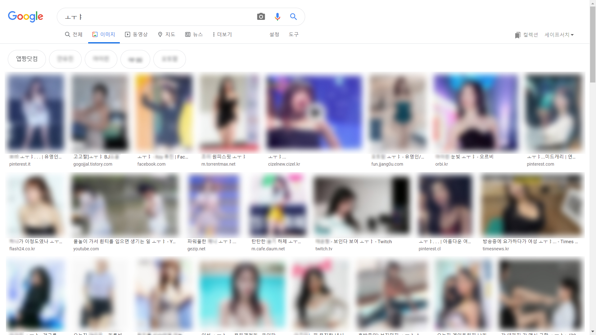
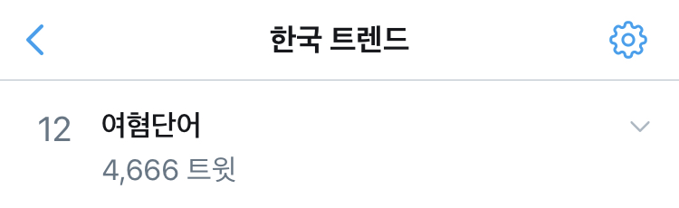

‘ㅗㅜㅑ’는 감탄사 “오우야”에서 모음만 남긴 신조어로, 줄여서 ‘퍄’ 또는 ‘퍄퍄’라고 표기하기도 한다.
주로 남초 커뮤니티에서 성적 대상화된 여성에게 쓰는 표현으로, 구글 등 포털 사이트에 ‘ㅗㅜㅑ’를 검색하면 영상의 일부분을 캡처화해 대상화하는 여성혐오적 게시글들을 볼 수 있다.
|  |
| 구글에 ‘ㅗㅜㅑ’를 검색했을 때 나오는 사진들. |
지난 3월 11일 트위터의 실시간 트렌드로 여성혐오 단어로서의 ‘ㅗㅜㅑ’가 공론화가 되었다. 당일 플로우의 주요 키워드였던 ‘여혐단어’는 4,600여 트윗으로 실시간 트렌드 12위에 올랐다.
당일 트위터에서는 ‘여성 가수가 악의 없이 썼던 웅앵웅과 같은 단어는 남성 혐오 단어로 가시화되었는데, 어째서 ㅗㅜㅑ는 여성혐오 단어로 인정하지 않는가?’, ‘ㅗㅜㅑ를 구글에 검색하면 가관이다’, ‘오우야, 어우야를 쓰는 건 상관 없지만, 이러한 여러 감탄사를 놔두고 굳이 ㅗㅜㅑ를 반복해서 쓰겠다는 건 여성혐오라고 생각된다’와 같은 의견들이 많은 공감을 얻으며 리트윗되었다.
|  |
| 2020년 3월 11일 트위터 한국 실시간 트렌드 캡처 |